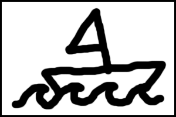

domModal.jquery.js
Clones the content of a link's target into a simple overlay.
More documentation to follow, or consult the wiki.
note: most of the styling of the overlay is handled in domModal.css
-
Targeting an element
Hidden Content
this is an example of content that is prestyled but hidden on the page; ideal for searchable content or assistive text.
- Targeting an image 
-
Custom parameters
foo
-
Setup function to execute beforehand
This happens after.
-
Callback function runs after animation is complete
Callbacks example
-
Embed video (YouTube iframe)
-
Don't click me
This is a custom Function?
-
Custom Modal Close Button
Custom Modal Close Button